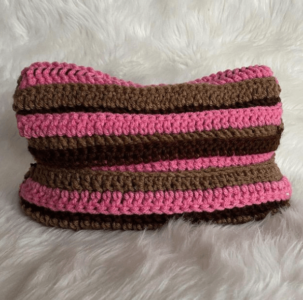
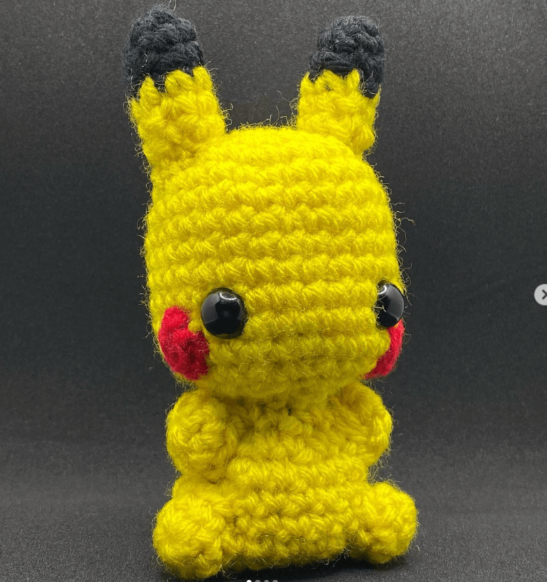
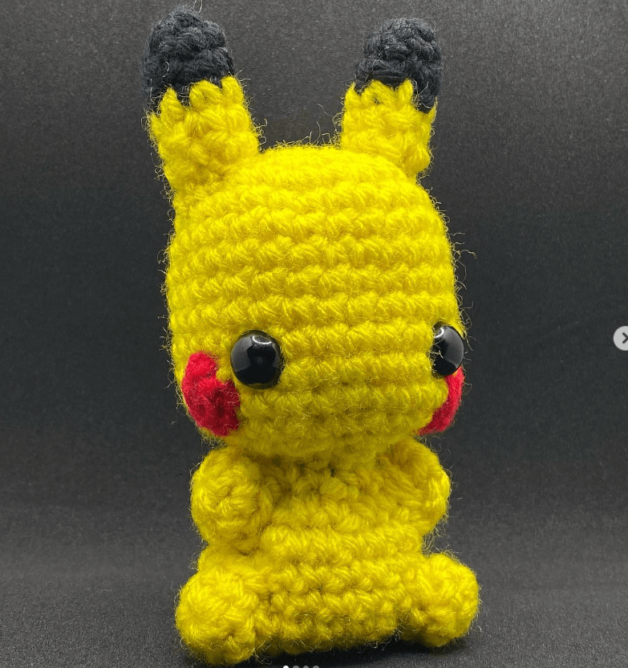
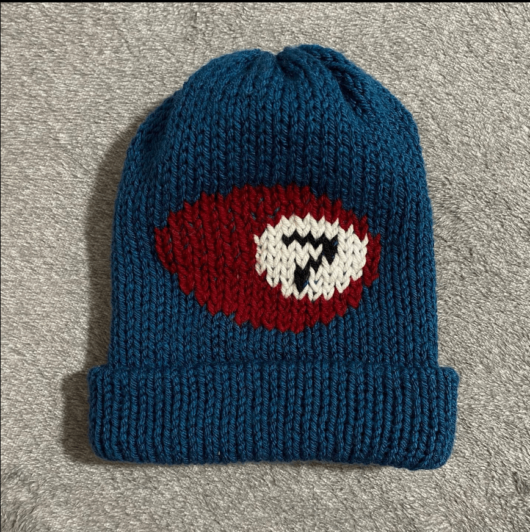
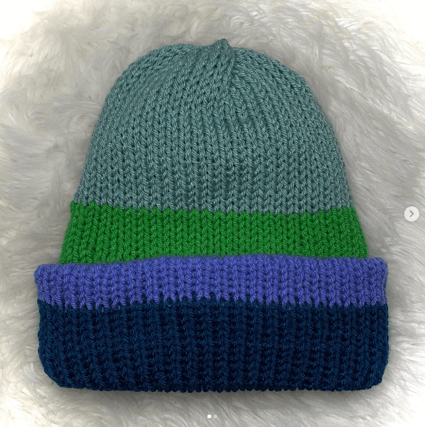

Overview
Have you ever had an art block and had no idea what to create? Or a moment when Pinterest just wasn't doing its thing? My everlasting passion is crochet. I started at 8 years old when my mom taught me how to crochet a chain. Ever since then my passion took off. Overtime I would be occupied with school work until quarantine happened and then I revisited the art. What do we offer? We have ideas from amigurumis, cat hats, knit beanies, and much more. In addition, we will offer patterns for each product as well! YES! You read that right. FREE patterns! Any questions or needed information will be answered to my email down below. This website will inspire you and guide you through your crochet dreams. I am a small business owner who lives off doing something I love. I know the impact and peace this art brings. From choosing yarns to choosing colors and feeling that excitement every time you know what you're gonna make.. and then finishing your project! And best of all, sharing your products with your friends, family and other fellow crocheters is the best feeling ever. This website is me sharing my ideas so others can not only see my creations but also find inspiration. Let us all gather together as crocheters and evoke our passion and talents together!



One of my first big projects: Granny Square Vest for my grandmother
A Sneak Peak Into Amigurumis

 


Some Beanies
You like what you see? These beanies are hand spun on a knitting machine. A knitting machine is a great investment, coming at you as low as around sixty dollars on Amazon, you can save hours with this handy machine. Usually when I make my beanies they take around 30 minutes with an additional 30 minutes by adding designs. Anyone can make these! Scroll down and click on our Beanies page to learn more!

